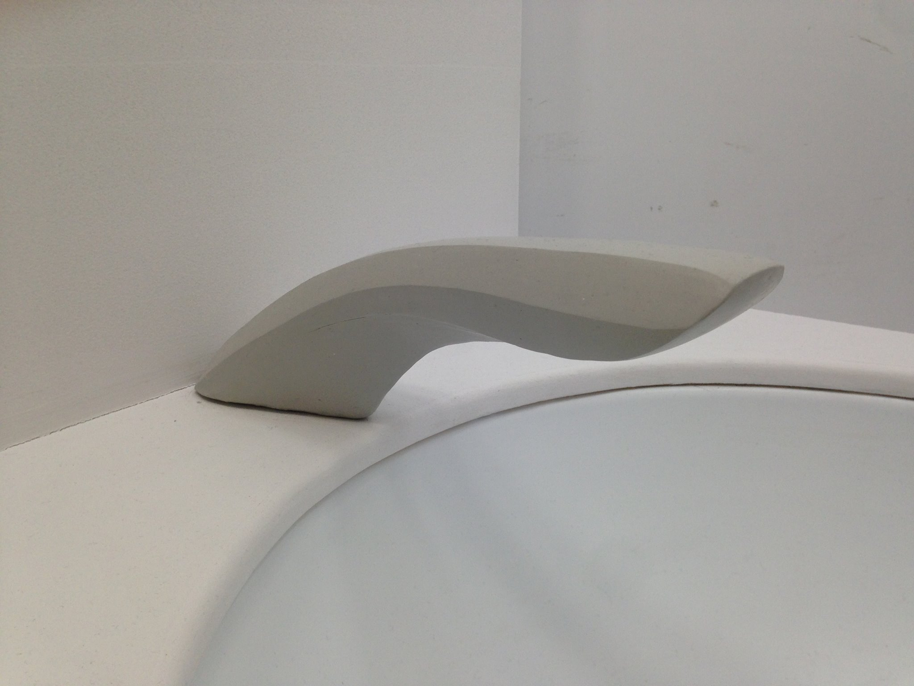
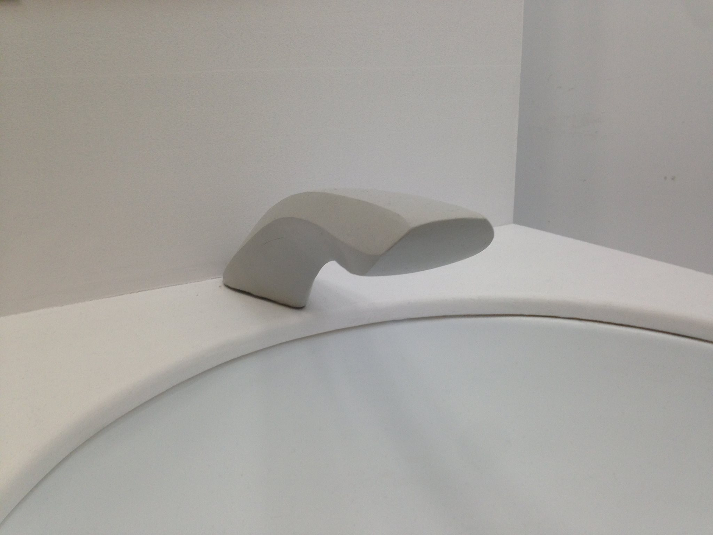

Developing physical UI & physical model
After analyzing the brand and ideating through divergent thinking and sketching, a final design was agreed upon. The faucet borrows some sleek & elegant curves, and a blend of smooth and sharp edges found in Tesla cars. Additionally, we decided to integrate a touchscreen to control water flow power and temperature. This relates to Tesla's love of technology and the large touchscreen control panel that come standard in every Tesla.
A physical model was created with Kolb modelling clay fitted over a wooden silhouette of the general shape.

